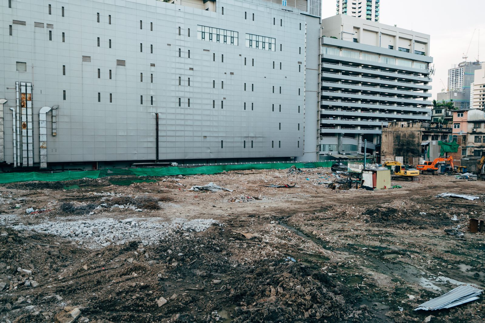
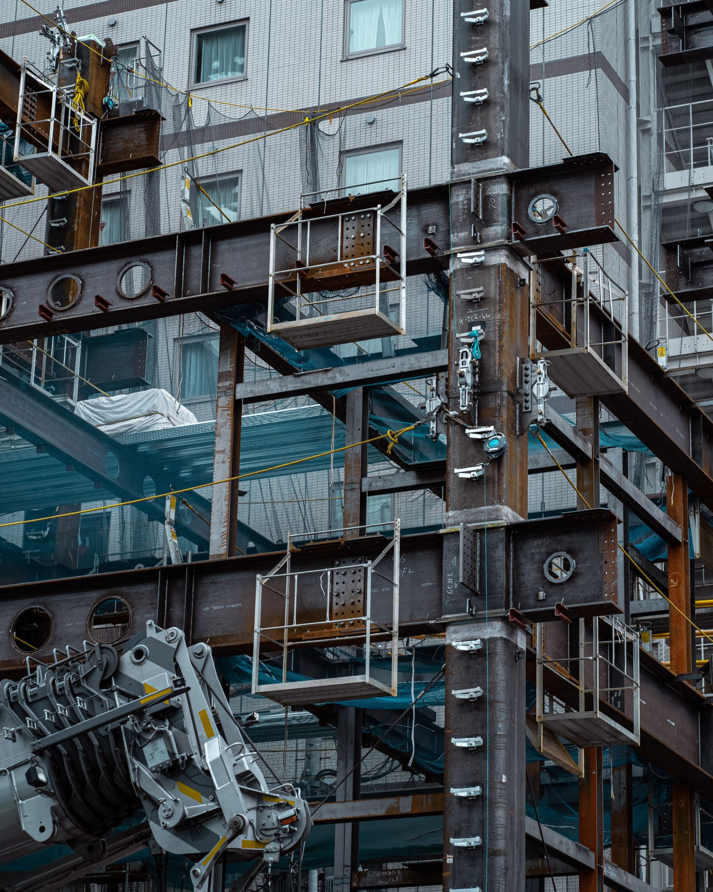

撮って、選んで、送るだけ。表紙付きの工事写真帳PDFが、現場のiPhoneで“その場”で完成。 事務所に戻ってからの貼り付け作業は、もう要りません。
※「完成サンプルPDF」は会社名・工事データ・写真がすべて架空の紹介用サンプルです。


工事写真帳づくりは、現場仕事のあとに事務所で待っている“見えない残業”。心当たりはありませんか。
現場の写真をPCに移して、ExcelやWordに1枚ずつ貼り付け。終わるのは日が暮れてから。
写真サイズ、表のズレ、改ページ。レイアウトを整えるだけで何十分も。入力ミスで作り直しも。
日本語が□に化ける、ファイルが重い、メール添付が面倒。提出のたびにヒヤヒヤ。
撮影も黒板合成も長期保存もしない。「資料づくりとメール送付」だけに振り切ったから、迷うところがありません。
カメラロールから工事写真をまとめて選択。並べた順が、そのまま台帳の掲載順になります。
「配管」「保温」など施工区分をワンタップ。よく使う区分はチップから即選択、その場で追加もできます。
表紙付きの写真帳PDFが自動生成。共有シートからそのままメール送付。現場で提出まで完了です。
「現場より、帰ってからの写真整理がしんどい」
——その“もうひと仕事”を、現場で終わらせる。
写真帳のためだけに事務所へ戻る。その当たり前を、過去にします。
多機能で迷わせない。現場の人がそのまま使える、引き算の設計です。
事務所に戻る必要なし。現場のiPhone1台で、写真選びからPDF送付まで終わります。
アプリストアの審査も配布も不要。URLを開いて「ホーム画面に追加」するだけで、アプリのように使えます。
PDF作成はすべて端末内で完結。電波の弱い現場・地下でも、待たされずに台帳ができます。
日本語フォントを丸ごと埋め込み。どの端末・ビューアで開いても、工事名も区分もきれいに表示。
注文番号・工事名・顧客名・工事場所・自社情報入りの表紙付き。1ページ2・3・4枚から選んで全体に適用できます（ページごとの混在はなし）。
写真を外部サーバーへ送りません。作業中だけ端末内で保持し、終わればクリア。漏えいの不安を減らします。
現場のあと、PCに向かう時間。
撮った直後、その場で送付まで。
※ 時間はイメージです。写真枚数や運用により異なります。
元請けが撮影ポイント（施工区分＋ひとことメモ）を並べてリンクを作成。LINEで送るだけで、協力会社のスマホに「撮影指示」が表示されます。
御社の自社情報・施工区分・メール雛形を設定してご案内します。まずは現場で試してから、で大丈夫です。
※「完成サンプルPDF」は会社名・工事情報・写真がすべて架空のイメージです。サンプルでは2／3／4枚レイアウトを比較用に1冊へまとめていますが、実際の写真帳は2・3・4枚のいずれか1つを選び、全ページに適用します（ページごとの混在はできません）。